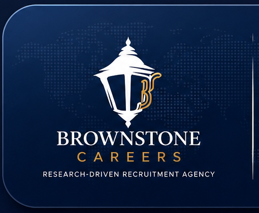

BROWNSTONE CAREERSWelcome to Brownstone Careers
Employee & Contractor Handbook — 2026 Executive Edition
Remote Careers. Real Opportunities. Lasting Professional Growth.
Brownstone Careers is a research-driven recruitment agency dedicated to connecting capable professionals with meaningful remote opportunities while supporting long-term career development.
Welcome
A Message to Every New Team Member
Welcome to Brownstone Careers. You are joining a community built around integrity, professionalism, growth, and service. This handbook introduces the standards, systems, and principles that guide how we work.
What You Can Expect
Clear communication, practical guidance, development opportunities, and respect.
What We Expect
Reliability, integrity, accountability, continuous learning, and professional conduct.
Our Commitment
To help you build confidence, strengthen your skills, and grow into greater responsibility.
About Brownstone Careers
Who We Are
Brownstone Careers provides recruitment, onboarding, career development, and workforce support for professionals seeking flexible and remote opportunities.
Our Specialties
- Administrative and executive support
- Virtual assistance and data entry
- Customer service and candidate support
- Finance and business operations
- Project coordination and research
Why Brownstone
We combine structured screening, practical assessment, thoughtful onboarding, and ongoing development to create better outcomes for candidates and clients.
Mission, Vision & The Brownstone Standard
Mission
To connect qualified professionals with credible opportunities while equipping them with the tools, standards, and support needed to succeed.
Vision
To become a trusted career-development and recruitment partner known for professionalism, innovation, and lasting impact.
The Brownstone Standard
Your Journey at Brownstone Careers
The Employee Journey
Welcome
Orientation, role clarity, and access.
Training
Systems, standards, and skill development.
Application
Practical tasks and supervised execution.
Development
Feedback, performance growth, and greater responsibility.
Advancement
Leadership, specialization, and career progression.
Remote Work Excellence
Work Professionally From Anywhere
Workspace Standards
- Reliable internet connection
- Quiet, organized work area
- Secure device and approved software
- Professional background for meetings
Daily Habits
- Review priorities
- Confirm deadlines
- Communicate progress
- Protect confidential information
Microsoft Teams Etiquette
- Respond within reasonable working timeframes
- Use clear and professional language
- Join meetings prepared and on time
- Keep discussions relevant and respectful
Professional Excellence Framework
Seven Pillars of Excellence
Integrity
Do what is right.
Excellence
Deliver quality work.
Communication
Be clear and timely.
Accountability
Own outcomes.
Learning
Keep improving.
Collaboration
Support the team.
Customer Excellence
Create trust.
Information Security
Protect Information and Trust
Confidential Information Includes
- Candidate and client data
- Identity and contact records
- Internal systems and credentials
- Financial and operational information
- Training materials and workflows
Security Rules
- Use strong, unique passwords
- Enable multi-factor authentication
- Do not share credentials
- Use approved systems only
- Report suspicious activity immediately
Brownstone Success Blueprint
Five Principles for Sustainable Success
Understand the role, systems, and expectations.
Review context before acting.
Deliver carefully and on time.
Use feedback to refine performance.
Take initiative and support others.
Operational Excellence
How We Deliver Reliable Results
Quality Checklist
- Requirements understood
- Facts verified
- Formatting reviewed
- Deadline confirmed
- Final output checked
Reliability Means
- Keeping commitments
- Communicating early
- Documenting decisions
- Escalating risks responsibly
- Learning from mistakes
Performance Excellence
How Performance Is Evaluated
30–60–90 Day Focus
Learn systems and expectations.
Build consistency and independence.
Deliver value and identify growth goals.
Collaboration & Workplace Culture
Culture Is Built Through Daily Behavior
Respect
Value different perspectives and communicate professionally.
Trust
Be honest, reliable, and discreet.
Collaboration
Share knowledge and support shared outcomes.
Conflict Resolution
- Address issues early and privately.
- Focus on facts, impact, and solutions.
- Listen before responding.
- Escalate respectfully when necessary.
Client & Candidate Experience
Every Interaction Shapes Our Reputation
Candidate Experience
Provide clarity, respect, timely updates, and honest expectations throughout the recruitment journey.
Client Experience
Understand requirements, protect confidentiality, communicate progress, and deliver dependable support.
Leadership, Ownership & Growth
Leadership Begins Before the Title
Ownership
Take responsibility for preparation, decisions, communication, and results.
Future Leader Qualities
Integrity, judgment, empathy, initiative, consistency, and the ability to help others succeed.
Career Pathway
Ethics, Compliance & Code of Conduct
Make Decisions That Protect Trust
- Act honestly and lawfully
- Treat people with dignity
- Protect company assets
- Avoid conflicts of interest
- Use technology responsibly
- Do not misrepresent the company
- Speak up about misconduct
- Follow approved procedures
Ethical Decision Framework
Employee Well-being & Inclusion
Healthy People Build Strong Organizations
Well-being
Maintain healthy routines, breaks, and sustainable work practices.
Inclusion
Create space for different backgrounds, experiences, and perspectives.
Support
Communicate early when workload, stress, or personal circumstances may affect performance.
- Set realistic daily priorities
- Take regular screen and movement breaks
- Respect working hours and boundaries
- Ask for support before challenges become emergencies
Learning & Professional Development
Continuous Learning Is Part of the Job
Learning Opportunities
- Role-based training
- Coaching and feedback
- Peer learning
- Independent study
- Stretch assignments
Monthly Reflection
- What did I learn?
- What improved?
- Where did I struggle?
- What will I focus on next?
Quick Reference Guide
Your Daily Professional Checklist
Start of Day
- Review schedule and priorities
- Check Teams and email
- Confirm deadlines
- Prepare required files
End of Day
- Update task status
- Communicate blockers
- Secure information
- Plan the next workday
Frequently Asked Questions
Common Questions
What should I focus on during my first weeks?
Learning the systems, understanding your role, communicating consistently, and building reliable work habits.
What should I do when I make a mistake?
Report it promptly, explain the facts, help correct the issue, and identify how to prevent a repeat.
How is growth supported?
Through training, feedback, practical experience, performance reviews, and leadership opportunities.
How should technical issues be handled?
Document the issue, notify the appropriate contact, protect information, and avoid unapproved workarounds.
What information is confidential?
Any non-public candidate, client, employee, financial, operational, technical, or strategic information.
Employee Acknowledgement
Professional Commitment
By acknowledging this handbook, I confirm that I have reviewed the standards and expectations outlined by Brownstone Careers.
- I will act with integrity
- I will protect confidential information
- I will communicate professionally
- I will accept accountability
- I will support an inclusive workplace
- I will pursue continuous improvement
A Message from Our CEO
Welcome to Brownstone Careers
Every successful organization begins with people who choose to work with integrity, purpose, and discipline. At Brownstone Careers, our goal is not only to create access to opportunities, but to help professionals develop the confidence and capabilities required for long-term success.
I ask each team member to lead with integrity, pursue excellence, stay curious, support others, and embrace opportunity. In return, we commit to providing structure, guidance, and room to grow.
Welcome to the Future
Building Careers. Empowering People. Creating Lasting Impact.
Your journey with Brownstone Careers begins with a commitment to growth, integrity, and professional excellence.
Brownstone Careers
Research-Driven Recruitment Agency
brownstonecareers.agency